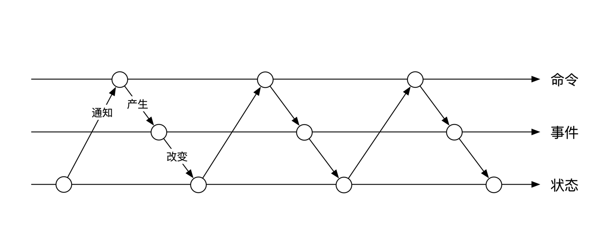
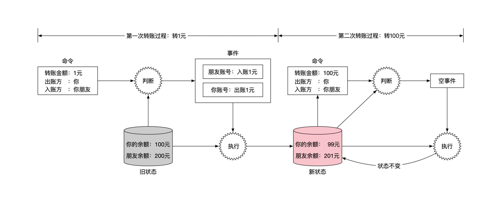
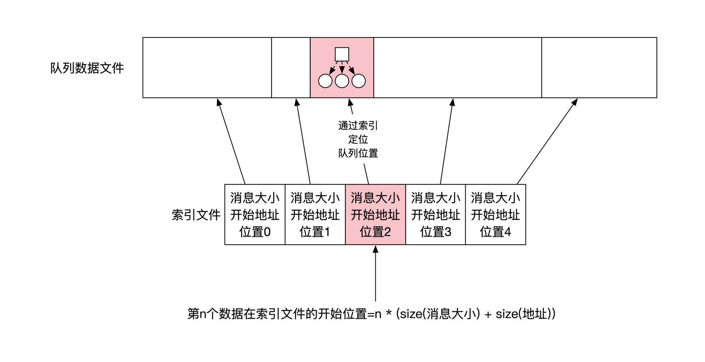
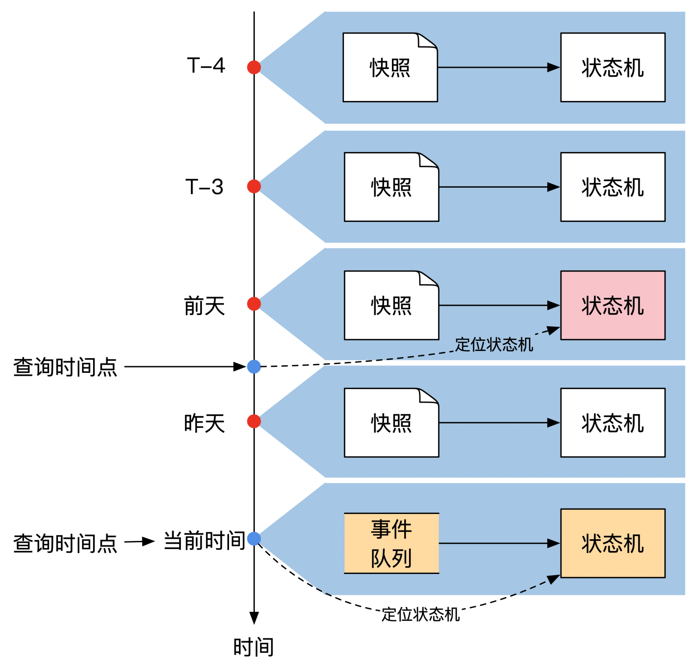

- 00 开篇词 如何成为金融级人才？.md.html
- 01 业务初探：扫了二维码之后发生了什么？.md.html
- 02 原理解读：如何理解第三方支付的业务逻辑和系统组件？.md.html
- 03 产品大观：不同金融业务都有哪些技术实现要点？.md.html
- 04 领域驱动设计（上）：如何设计金融软件顶层架构？.md.html
- 05 领域驱动设计（下）：如何设计统一的金融业务模型？.md.html
- 06 计算输入的正确性：怎么选择正确时间的数据？.md.html
- 07 计算过程的正确性：如何设计正确的数据处理架构？.md.html
- 08 计算结果的正确性：怎么保证计算结果是正确的？.md.html
- 09 数据传输的质量：金融业务对数据传输有什么要求？.md.html
- 10 数据存储的合理性：金融业务可以不用关系型数据库吗？.md.html
- 11 系统优化：如何让金融系统运行得更快？.md.html
- 12 正确性分级（上）：单机无备份有哪几种不同的一致性？.md.html
- 13 正确性分级（中）：多机无容灾有哪几种不同的一致性实现？.md.html
- 14 正确性分级（下）：多机有容灾有哪几种不同的一致性？.md.html
- 15 分布式正确性的存在性（上）：什么情况下不存在分布式共识算法？.md.html
- 16 分布式一致性（下）：怎么理解最简单的分布式一致性算法？.md.html
- 17 正确性案例（上）：如何实现分布式的事件溯源架构？.md.html
- 18 正确性案例（中）：常见分布式数据方案的设计原理是什么？.md.html
- 19 正确性案例（下）：如何在运行时进行数据系统的动态分库？.md.html
- 20 容灾（上）如何实现正确的跨机房实时容灾？.md.html
- 21 容灾（下）：如何通过混沌工程提高系统稳定性？.md.html
- 春节策划第1期 分布式金融系统知识，你掌握了多少？.md.html
- 春节策划第2期 读书如抽丝，为你推荐一些我读过的好书.md.html
- 春节策划第3期 如何运用架构知识解读春运买票和手游案例？.md.html
- 答疑集锦（一） 思考题解析与外汇架构知识拓展.md.html
- 答疑集锦（三） 思考题解析与数据库底层实现.md.html
- 答疑集锦（二） 思考题解析与账务系统优化.md.html
- 结束语 金融之道，与你同行，虽远尤欣.md.html
- 捐赠
07 计算过程的正确性：如何设计正确的数据处理架构？
你好，我是任杰。这节课我和你聊一聊怎么设计一个能正确处理数据的架构。
只把一件事情做正确很容易，难的是把所有的事情都做正确。当然了，绝对的完美是很难达到的，那退而求其次，我们有没有可能设计出一种架构来减少犯错误的可能性呢？或者再退一步，如果出现了错误，我们能不能准确地知道错误出在什么地方呢？
金融行业是有强监管要求的。金融系统不仅仅要求你正确地实现系统，而且还要求你能解释系统为什么是正确的。
所以这节课我会带你掌握事件溯源（Event Sourcing）的核心设计。这个架构是金融行业多年来沉淀下来的行之有效的正确性解决方案。你掌握了这个架构，金融行业正确性的问题也就基本解决了。
基本概念
游戏举例
不知道你有没有玩过联网的5v5即时对战手游。10个人通过手机玩游戏，每个人都能看到其他人在游戏里的情况。虽然手机信号不太稳定，可能还会临时断网，但不管网络条件怎么恶劣，所有人手机里的游戏情况都是一样的。这就是多人游戏的正确性。
金融系统和游戏一样，对正确性都有很高的要求，这两个行业的架构也有类似之处。所以接下来我在介绍事件溯源设计的时候也会举一些游戏的例子，方便你理解。
关键术语
我们在第4节课和第5节课介绍了领域驱动设计。事件溯源是领域驱动设计理论关于正确性的重要内容。在事件溯源里有三个重要的术语：
1.命令（command）- 2.事件（event）- 3.状态（state）
命令指的是系统收到的外部指令。比如你在玩游戏时，键盘和方向键的输入就是命令。
系统在收到外部的命令后，并不会马上执行，而是会先做一些检查，如果合理才会执行，不合理就不执行。比如说游戏里的地图都有边界，如果你控制的角色已经走到了墙角，再往前走就会碰到墙。这时如果游戏收到向前走的命令，游戏的边界碰撞检查算法就会判断这个命令是非法的。
命令检查的结果就是事件。事件是合理的、一定要执行的事情。由于事件是正确性检查后的结果，事件的执行一定不会出问题。所以从逻辑上来说，只要生成了事件就一定要执行。一般我们会用英语的过去式来表示事件。
比如在游戏里，让角色向右走的命令叫作”move right”，而对应的事件是”moved right”。这个小小的区别很重要，你要仔细体会。
事件执行的结果是改变状态。还是沿用游戏的例子，你在游戏里看到的画面就是游戏的状态，比如你游戏角色的位置、装备、属性等等。
当系统的状态改变之后，外界会根据最新状态再产生新的命令，周而复始地执行。这就是用事件溯源设计的术语来描述你玩游戏的过程。
命令、事件和状态这三者之间的关系可以用下图来表示。-
上面这幅图展现的是三者之间的静态关系。另一个角度是从时间的维度看这三者之间的动态关系。如下图所示：

账务系统举例
前面游戏的例子主要是为了方便让你理解命令、事件和状态这3个术语。掌握了这三个核心术语之后，我们再来看一个账务系统的例子。
账务系统负责记账，所以它管理着所有用户的账户金额信息，比如说你的现金余额、贷款等等。这些账户金额信息就属于状态。假设你现在账户余额有100元，你朋友的账户余额有200元，你们俩的金额状态示意图如下：
假设你想通过手机转账的方式，转给你的朋友一块钱。这个转账请求是命令，会发送到账务系统。
账务系统在收到这个命令后会进行检查，判断这个命令是否合理。现在需要转账一块钱，而你的账户金额大于一块钱，所以转账是合理的。
既然合理，那么账务系统就会从命令生成事件，一共有两个。一个是从你的账户扣款一块钱，另一个事件是给你朋友账户入账一块钱。从这个账务系统的例子中你可以发现，一个命令可以生成多个事件。
在我们这个转账例子里，一个转账命令会生成两个事件。示意图如下：
接下来是执行这两个事件。执行后会改变系统状态，也就是改变你们俩的余额情况。你的余额会变为99元，而你朋友的余额则变为201元，示意图如下：
这时候你发现自己账户上还有一些余额，于是想尝试给你朋友转100元钱。但是当账务系统收到你的新转账命令后，会发现余额不足，无法完成转账。这时候系统应该怎么处理呢？
当命令的检查不通过时，系统可以选择不生成事件，或者选择生成一个空事件（NOP）。生成空事件的好处是能在系统中记录某个命令在历史上曾经存在过。空事件的执行结果是不改变任何状态。这里你这两次转钱的流程示意图如下：

如何处理命令和事件队列？
掌握了事件溯源设计的三个核心术语后，我们再来看看相应的系统应该如何实现。
事件溯源设计的一个核心设计是所有的命令或者事件的处理都要有确定的顺序。同样的两个命令，如果它们俩到达的顺序不一样，生成的事件可能就会不一样。
比如说你现在的余额有100元。接下来有两个命令，一个命令是给你转账100元，一个命令是你打200元钱给你朋友。
如果你先收到100元钱，再付出去200元钱，那么你付钱的时候账户里刚好有200元，因此这两个命令的检查都能通过。但是如果你先转出去200元，再收到100元的话，系统会发现你在转200元钱出去的时候余额不足，所以这个命令会失败。
保证顺序的方法也不难，就是将所有的命令和事件都分别放到两个先入先出的队列（First In，First Out，FIFO）。一般这些队列会被保存到文件中。系统会从命令队列中逐一读取下一个命令，判断这个命令是否合理，然后将生成的所有事件放到事件队列末尾。示意图如下：
在实现时还可以做一个小的优化。命令队列和事件队列虽然是两个不同的队列，但是由于它们的先后顺序是完全一致的，我们可以将这两个队列合并为一个队列。这时候的处理逻辑需要做一些小的调整。命令收到了之后，我们并不会马上存储下来。而是先处理这个命令，得到了对应的事件之后，再将命令和事件打包到一起，存到队列中。
下图列出了这个优化后的存储情况。你可以结合图片体会一下具体的区别：
怎样实现队列存储？
事件溯源设计对于存储设备非常友好。无论是基于碟片的传统硬盘，还是新一代的SSD存储，事件溯源设计都能非常有效地利用存储设备提供的吞吐能力。
这是因为命令和事件这两个队列只会在末尾增加新的内容，而不会修改中间的内容。我们一般把这种访问方式叫作顺序写。与之对应的是随机读写。
你在挑选硬盘的时候，一般能看到硬盘生产商会公布两个硬盘速度，一个是顺序读写速度，另一个是随机读写速度。你会发现顺序读写的速度会快很多。所以事件溯源设计一般都能达到很高的读写效率。
请注意，当你将每个队列存储到文件时，需要存储的是两个文件，而不是一个。其中一个文件显然是队列的内容。另一个文件则是这个队列的索引文件，它记录了每个内容在队列中的位置。
在一些场景下，我们需要能定位到指定位置的内容，比如第3个命令是什么，或者第10个事件是什么。由于每个命令或者事件的内容大小会不一样，我们需要额外的索引文件来帮助我们定位。
由于位置信息和偏移量这两个数据的长度都是固定的，索引文件的每个内容都有固定大小，所以我们可以根据我们要的位置直接计算出索引文件的偏移量，然后根据索引文件找到队列文件的位置。计算的示意图如下：

怎样执行事件和改变状态？
解决了如何处理命令和事件之后，我们就剩下最后一件事情，那就是怎么执行事件和改变状态。
自动机执行
事件的执行用到了计算机里最经典的计算模型，叫作自动机。你可以将事件队列当作一个有始无终的磁带。你会从头开始依次读取每个事件。读取之后按事件内的指示来改变内存状态。然后挪到下一个位置，继续处理下一个事件。是不是很简单？自动机的示意图如下：
这里有一个非常重要的限制你要牢记：自动机在执行事件的过程中不能有任何随机行为。这是为了保证整个系统能准确复现每一步计算，因为这样才能满足金融行业对每一步计算过程都能审计的要求。
对于没有随机性，我们要注意两点。
第一点是不要使用随机数。这里的随机数指的是真实的随机数，而不是伪随机数。真实的随机数一般会采用硬件的随机数发生器，每次读取都会读到不同内容。
伪随机数是一个算法和对应的初始值（也叫随机数的种子）。初始值一旦确定，伪随机数发生器所有接下来的随机数也就确定了，所以伪随机数其实并不是一个随机的事情。你需要将随机数的算法和初始的种子也记录到事件中，这样虽然看起来有随机数这几个字眼，但运行起来还是完全确定的。
另一点是不要有I/O（输入/输出）。准确地说是不要有来自外部的输入。外部输入有很多不确定性，比如输入到达的时间不确定，或者到达的内容每次都会变化，或者消息超时，什么都收不到。由于外部输入有太多的不确定性，一般要求不能有外部输入。
但是我们不能完全取消所有外部输入。这时候有一个折衷处理方式。你可以提前从外部获得输入，然后存储在事件队列中。这样在执行事件的时候就不会受到外部输入不确定性的影响了。
时光机
我们还是拿游戏举例，给你说明什么是时光机功能。一般来说游戏都可以存档。如果你游戏玩不下去了还可以读档，恢复之前的游戏状态。这个存档读档的过程就是坐时光机回到过去的过程。
事件溯源提供了更完美的时光机（time machine）功能。它能恢复到过去任何一个时间点的状态。你需要做的事情也很简单，只需要重置自动机状态，然后把事件一个一个执行，直到运行到你指定的时间点。如果你按照我前面指出的要求，保证自动机在执行过程中的每一步都是完全确定的，那么最终一定能准确地回到过去的状态。
时光机给了金融系统审计的能力。由于过去所有的命令都得到了保留，你能解释状态是怎样一步一步从最开始的情况变到现在的样子。在互联网架构里我们更关注的是当前事实，所以架构设计时会倾向于记录状态，而不是原因。但是在金融系统里，我们更关注的是为什么，而非是什么，所以架构设计会倾向于记录原因。
系统快照
时光机还给系统架构带来了一个副产品，那就是容灾能力。如果机器出了问题，状态全都丢失了。只要事件都在，事件溯源设计能保证一定能恢复到出问题前的状态。
但是这种容灾有一个问题。系统恢复的时间长短和事件的个数有关。事件多了可能恢复的事件会变得太长。所以我们需要针对性地优化恢复速度。
优化的方法很简单，只要将当前的系统状态全都保存到文件就可以了。我们一般称呼这个过程为打快照（Snapshot）。过了一段时间之后，如果想要恢复到系统的最新状态，你只需要先将快照文件加载到自动机里，然后从打快照的时间点开始执行后面的事件。
为了能让自动机找到下一个需要执行的事件，你需要将快照对应的事件位置也记录到快照里。打快照的示意图如下：
有了打快照这个优化之后，系统恢复时间只和那些不在快照里的事件个数有关，跟事件的历史长度无关。所以打快照的频率决定了恢复时间，而不是事件的总个数。
打快照频率有多种选择。你可以选择频繁地打快照，这样会减短系统恢复时间。但是考虑到系统打快照也需要时间，系统的运行时间会增加。或者你可以选择偶尔打快照，这样恢复时间变长，但是系统运行时间会变短。
幸运的是金融系统不需要过多思考打快照频率的问题。因为金融系统里有一个日切的概念。日切指的是在每天晚上12点的时候，你需要对当天的所有业务进行清点，确认无误后再开始下一天的工作，所以系统需要在每晚12点打一个快照。
除了每晚12点以外，金融行业一般还需要按月、季度和年度来进行业务清点工作。通常这些特殊的时间点也需要晚上12点整的状态，因此可以复用每天晚上日切的快照内容。但是也有可能碰到特殊时间点的要求，这时候需要单独打快照。
怎样查询数据？
到目前为止，我给你解释了事件溯源设计如何进行存储和计算，但是还没有说怎么查询数据。事件溯源设计对于查询有专门的术语，叫做CQRS（Command Query Responsibility Segregation），就是我们通常说的读写分离。这里的Command就是事件溯源里的Command。
读写分离指的是写入的组件只负责写，查询的组件只负责读。这样做的优势是，写部分的存储和读部分的存储可以根据访问的特点来分别做优化。
读写分离不仅仅是事件溯源需要，在其他架构中也经常能看见。比如有些K/V存储在写入的时候，会选择一些写入速度较快的数据结构，像LSM树。在读取数据的时候则会选另一些读取速度快的数据结构，比如B+树。
事件溯源和其他设计不一样的地方在于，事件溯源既能查到当前内容，也能查到任何过去内容。我们先来看看怎么查询最近的内容。
思路很简单。如果我们将事件队列实时地复制出来，然后在另一台机器上用自动机执行这些事件，那么我们不就有最新的状态了吗？这就是状态机的读模式（Read Mode）。在读模式下，状态机只负责执行事件，不负责处理命令。示意图如下：
读模式自动机在游戏行业也经常能碰到。5v5即时对战手游在进行比赛的时候会有现场直播，讲解员会在电脑上实时讲解当前所有选手的对战情况。电脑就是用读模式复制了手机上所有的实时状态。
我们再来看看怎么查询历史状态。最直接的方案显然是利用时光机的功能。我们先找到距离查询时间最近的快照，然后从这个快照开始执行事件，直到碰到查询时间点。这时候的状态就是我们需要的状态。一般我们把这个重新计算历史状态的过程叫作回滚。
在进行架构设计时你可以选择将实时查询和历史查询的优势结合起来。你需要做的是搭建多个读模式自动机。其中一个永远保持在最新状态，剩下的根据历史查询的频率来选择固定在过去某个时间点，比如日切的时候。多个读模式自动机的示意图如下：

事件溯源正确性的数学本质是什么？
我们在开篇词里提到会带你透过现象看本质。所以在给你讲完怎么实现事件溯源之后，最后我来带你了解一下事件溯源正确性的本质。
事件溯源的框架隶属于一个更大的系列，叫做不可变架构（Immutable Architecture）。在不可变架构里，所有数据都不能发生变化。所有这些不能变化的数据分为两大类，分别是事件（Event）和状态（State），分别用 e 和 S 来表示。
我们把前面讲到的自动机在数学上用函数 f 来表示。这个函数接受一个状态和事件，返回一个新的状态。如果我们把事件、状态和自动机结合在一起看，整个事件溯源的运行逻辑其实就是下面这个数学公式：
\[- S\_{n}=f\\left(S\_{n-1}, e\_{n}\\right)- \]
如果你把公式里的所有 S 都展开，那么数学公式就会变成下面这个样子：
\[- S\_{n}=f\\left(f\\left(\\ldots f\\left(f\\left(f\\left(S\_{0}, e\_{1}\\right), e\_{2}\\right), e\_{3}\\right) \\ldots\\right), e\_{n-1}\\right)- \]
上面这个数学公式可能看不出来什么熟悉的东西。但是如果换个表现方式你可能就熟悉了。我们可以把 f 换成 + ，这样事件溯源的公式就会变成将当前状态和事件的求和，从而生成新的状态，所以数学公式也可以变成下面这个样子：
\[- S\_{n}=S\_{n-1}+e\_{n}- \]
我们把简化后的数学公式展开之后可以发现，在事件溯源的设计里，任何一个时间点的状态等于之前所有事件效果的累积，就像下面这个公式表现的一样：
\[- \\begin{aligned}- S\_{n} &=S\_{0}+e\_{1}+e\_{2}+\\ldots+e\_{n-2}+e\_{n-1} \\\\\\- &=\\sum\_{i=0}^{n-1} e\_{i}- \\end{aligned}- \]
说到这里，我就可以给你解释，为什么在事件溯源里的我们会有那些假设了。
我们要求自动机是没有随机性的，原因是在数学里所有的数学函数都没有随机性，这样才能保证数学计算的结果是可以一步一步推演出来的。
另外，我们在记录事件的时候要求事件之间有顺序，这是因为自动机对应的函数一般是不可交换的（Non-commutative）。
也就是说函数的参数交换顺序后会导致结果不一样，这也导致数据之间是线性序列（Linear Order）的关系。这个线性序列关系导致我们在存储的时候选择用FIFO队列的存储格式。
由于我们可以通过逻辑推导来验证数学计算的正确性，当事件溯源和数学公式之间有严格一一对应关系之后，我们就可以像验证数学公式一样来验证事件溯源结果的正确性。这就是事件溯源能保证金融系统正确性的本质原理。
上面这些公式是用求和的方式来表示最终的状态是怎么得到的。在极限情况下，我们还可以有积分和微分表现形式。用积分的概念去理解的话，任何一个时间点的状态等于过去所有事件的积分，表示出来就是下面这个公式：
\[- S(T)=\\int\_{t=0}^{T} e(t) d t- \]
微分的形式可能更有意义一些。每个事件是状态关于时间的导数，也就是下面的这个公式：
\[- e(t)=\\frac{d S(t)}{d t}- \]
微分和积分的形式更多的是让你从时间的角度来理解事件和状态之间的关系。你可以仔细体会一下。
小结
这节课我给你讲解了事件溯源设计这个架构设计思路。在事件溯源设计里，你重点要关注命令、事件和状态这三个术语。命令指的是我想要做什么，事件是我合理的行为会做出什么改变，状态就是改变的对象和结果。
命令和事件都需要按照事件的先后顺序来处理。它们的存储也需要遵循同样的先后顺序。为了能定位到指定位置的内容，我们需要在存储数据的时候还同时存储一个位置的索引文件。
命令和事件都存储好之后，事件溯源设计里的状态机就可以从零开始，按顺序一一执行所有事件。我们要求所有执行的操作都具有可重复性，也就是不允许有随机性。这样就能确保我们多次从头执行，最终都能得到一样的结果。
这样要求有很多好处：既可以审计所有的状态变化过程，也可以有一定的容灾能力，同时还可以通过时光机和快照来让系统回滚到历史中任意一个时间点的状态。
事件溯源设计的查询需要遵循CQRS，也就是读写分离的架构。系统会有一个自动机负责处理所有的命令和事件，另外还有很多读模式的自动机负责提供查询服务。这些读模式自动机会将系统回滚到打快照的时间点，然后从这个时间点出发，计算查询时刻的历史状态。
思考题
我们在存储事件队列的时候需要存储两个文件。一个存储事件，另一个存储事件的索引。在现实中会出现各种异常的情况，比如机器可能会中途死机，这样有可能文件只写了一部分。
1.这时你应该如何检测文件是否完整？
2.这两个需要存储的文件，应该按照怎样的先后顺序存储呢？
欢迎你在留言区留下你的思考和疑问。如果这节课让你有所收获，也欢迎分享给你的同事、朋友，和他一起交流进步。
© 2019 - 2023 Liangliang Lee. Powered by gin and hexo-theme-book.